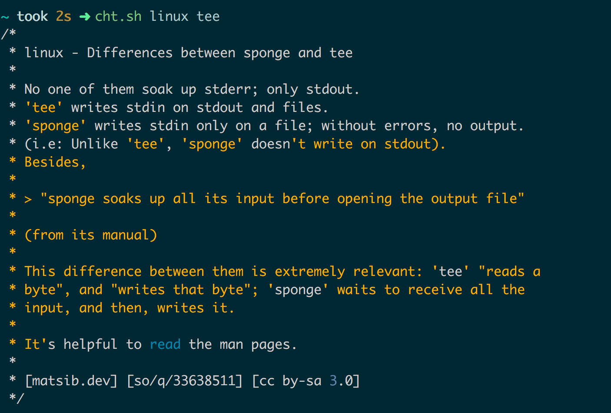
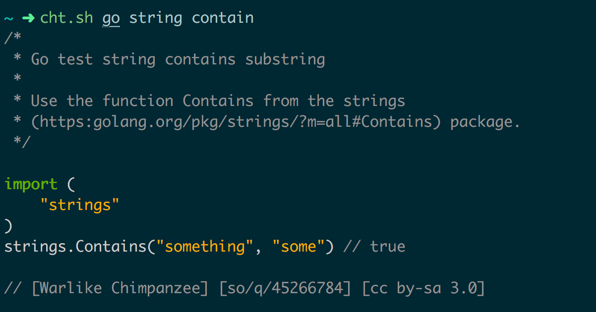
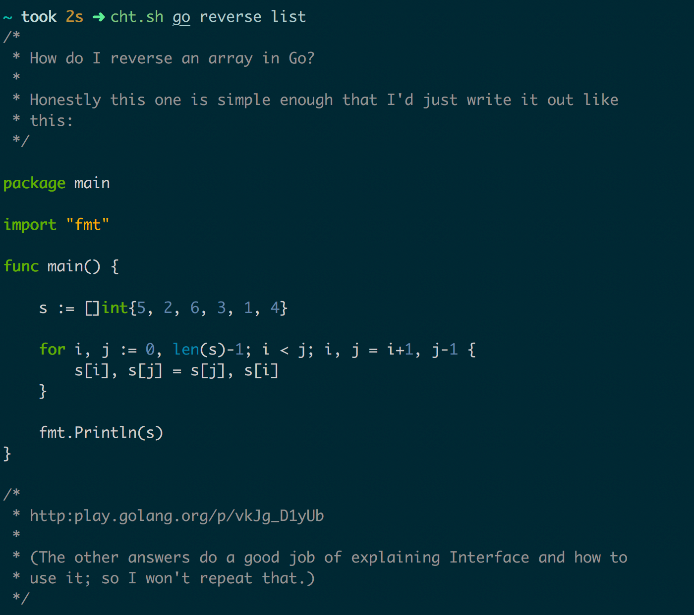
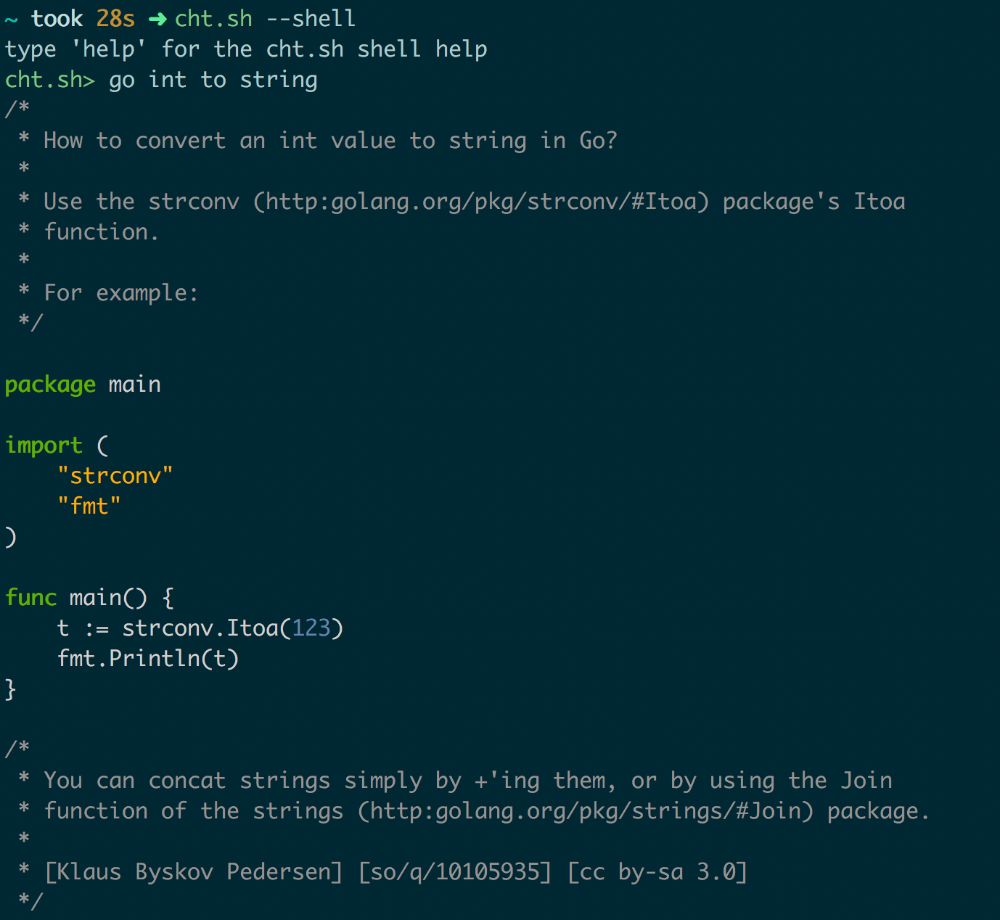
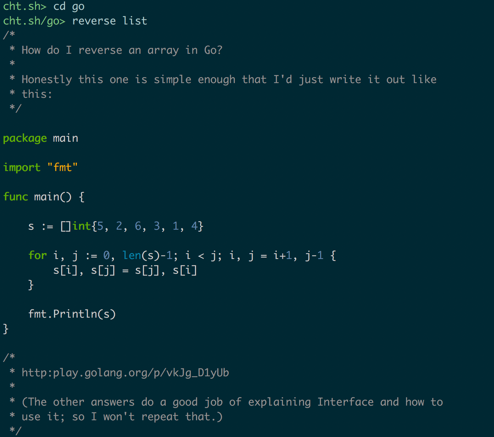
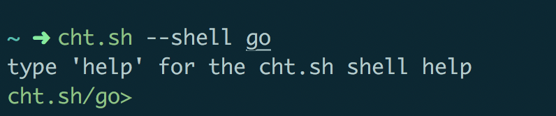
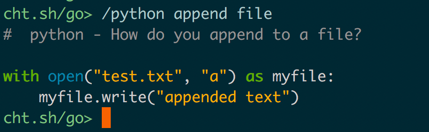

介绍
cheat.sh 号称自己提供了世界优质技术社区中代码速查表的统一访问。
安装
1 | curl https://cht.sh/:cht.sh | sudo tee /usr/local/bin/cht.sh |
使用
基本的查询命令为：cht.sh 语言 问题关键词
例1：查命令
比如，你不知道上边安装命令中 tee 是什么意思，可以尝试用下边的命令查看提示：
1 | cht.sh linux tee |

由此可以看出 cht.sh 不限于查代码，还可以查命令的用法。
例2：查函数
再举个例子，假如我不知道 go 中有没有能够判断字符串中是否包含某个字符的函数，可以使用：
1 | cht.sh go string contain |

例3：查实现
或者我想知道 go 中如何反转一个 list：
1 | cht.sh go reverse list |

进入交互模式
想进入 cht.sh 的交互模式，需要先安装 rlwrap 这个工具。
Mac 安装方式：brew install rlwrap
进入交互模式的命令为：cht.sh --shell
进入交互模式后，就不用再输入 cht.sh 的命令了，直接问问题就可以，比如我想知道 go 中如何将 int 转为 string：

更进一步，如果想在后续的查询者固定查询某个语言，可以通过 cd 命令，这样在后续的查询中连语言都可以省掉：

也可以在进入交互界面时指定语言 cht.sh --shell go：

在指定了语言的交互界面中，如果想在不 cd 到其他语言的情况下临时查询其他语言的用法，可以通过以 / 开头 临时指定语言：
